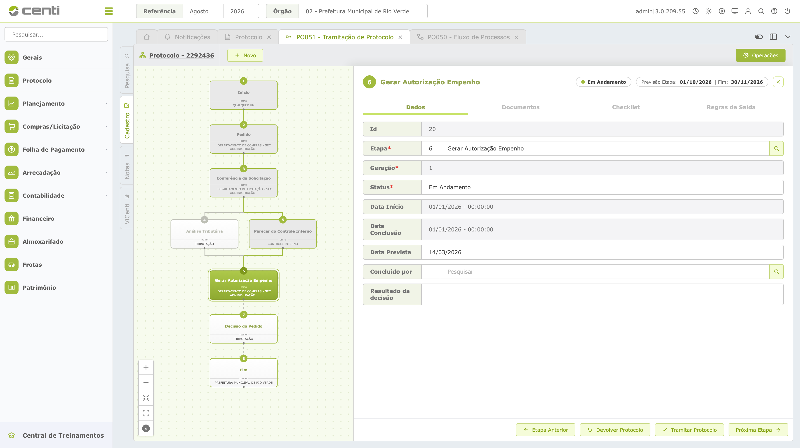

#1 Modelo de Negócios
Definição do modelo de negócios do Novo Protocolo: proposta de valor, segmentos atendidos e modelo de receita.
Descrição do Produto
É o 3º nível da ferramenta de protocolo municipal da CENTI, que permite tramitar processos administrativos por fluxos configuráveis e visuais, orientando os servidores em cada etapa e permitindo que diferentes departamentos trabalhem de forma integrada e simultânea, com controle de documentos, prazos e checklist para execução da etapa.
O Protocolo 3.0 é a solução da CENTI para tornar a tramitação de processos administrativos mais simples, organizada e eficiente, eliminando esperas, retrabalhos e obstáculos que podem ser evitados no dia a dia da prefeitura.
Mais do que apenas digitalizar documentos, o Protocolo 3.0 orienta cada processo pelo caminho adequado, deixando claro o que precisa ser feito, por quem, em qual etapa e dentro de qual prazo, permitindo que atividades sejam realizadas simultaneamente quando possível, que decisões sejam apoiadas por checklists, documentos e regras, e que toda a comunicação e o acompanhamento aconteçam em um único ambiente.
O resultado é uma gestão ágil com menos processos parados, menos idas e vindas, mais previsibilidade, rastreabilidade e controle, dando aos gestores uma visão clara da operação e aos servidores mais segurança para executar suas responsabilidades.
Porque ser ágil não significa apenas fazer mais rápido: significa fazer o processo avançar, sem interrupções e pelo caminho certo.
O Problema
Quando a tramitação de processos não é bem gerida, os efeitos vão além do dia a dia operacional: geram risco tanto para a prefeitura quanto para a Centi. Os tópicos abaixo separam esses riscos por quem os sofre diretamente.
Proposta de Valor
Permitir que prefeituras organizem e acelerem a tramitação de processos administrativos, substituindo fluxos burocráticos, fragmentados e difíceis de acompanhar por uma jornada visual, estruturada e orientada, na qual cada servidor sabe o que precisa fazer, em qual etapa, com quais documentos e dentro de quais prazos. Dessa forma, a prefeitura reduz esperas, retrabalhos e encaminhamentos desnecessários, aumenta a previsibilidade e o controle sobre seus processos e proporciona uma gestão mais eficiente, transparente e moderna, com uma solução de implantação simples e acessível também para municípios de pequeno e médio porte.
Estratégia de Monetização
Considerando que ~95% do mercado é de pequeno/médio porte e com orçamento limitado, a hipótese de partida é modelo de assinatura recorrente (mensal ou anual) por município, em faixas por porte/população. Vejam os detalhes abaixo:
Receita recorrente (SaaS)
Assinatura mensal por município. Contratos públicos tendem à longa duração e renovação — o LTV do cliente público, bem atendido, é dos mais altos que existem.
Canais: venda direta e licitação
Venda direta nos enquadramentos que o valor permite, e participação em licitações para os demais — os dois caminhos clássicos e conhecidos do setor.
Tíquete acessível, base pulverizada
O produto foi desenhado para caber no orçamento do município pequeno — o segmento com menos concorrência real e maior volume de portas.
Expansão natural
Câmaras, autarquias, fundações e consórcios usam a mesma estrutura — cada município conquistado abre entidades-irmãs. E o produto é a porta de entrada para o portfólio maior da Centi.
#2 Inteligência de Mercado
Análise do mercado, concorrentes e tendências que orientam o posicionamento do produto.
Visão de mercado
O Protocolo 3.0 está inserido no mercado de GovTechs e soluções SaaS para digitalização da gestão pública, especificamente no segmento de protocolo, processos administrativos, tramitação eletrônica e workflows municipais.
O mercado passa por uma evolução de sistemas que apenas digitalizam documentos para plataformas capazes de orientar fluxos, controlar prazos, integrar departamentos, automatizar tarefas e oferecer rastreabilidade de ponta a ponta.
A oportunidade da Centi está em transformar o protocolo de um simples ponto de entrada documental em um motor de tramitação inteligente, conectando cidadão, servidor e gestão municipal em uma única jornada.
Cenário competitivo
O mercado possui quatro grupos principais de concorrentes:
| Grupo | Principais players | Característica |
|---|---|---|
| Especialistas em processos digitais | 1Doc, Aprova | Foco direto em protocolo, atendimento, processos e automação |
| Suites de gestão pública | Fiorilli, IPM, Betha, Elotech, Thema | Protocolo e processos integrados a um ecossistema maior de gestão municipal |
| GovTechs de relacionamento e dados | Gove | Atendimento digital ao cidadão, cadastro central e automação com IA |
| Soluções institucionais | SEI / ProPEN / Protocolo GOV.BR | Alternativas públicas para digitalização e tramitação de processos |
A 1Doc é o principal benchmark direto do Protocolo 3.0, com mais de 900 organizações e entidades declaradas atualmente e presença nos 26 estados. A plataforma reúne protocolo, processo administrativo, ouvidoria, requerimentos, carta de serviços e outros canais em um único ecossistema.
A Aprova é outro concorrente direto relevante, com mais de 130 prefeituras atendidas e posicionamento baseado em processos configuráveis, automação e inteligência artificial.
A Gove atua no relacionamento digital entre prefeitura e cidadão: atendimento e serviços por WhatsApp com chatbot, cadastro central verificado e comunicação ativa por e-mail, SMS e WhatsApp. Posiciona-se como governo zero clique — antecipar a demanda em vez de esperar a solicitação — e declara presença em mais de 100 cidades, cerca de 2% dos municípios, alcançando mais de 16 milhões de habitantes.
Entre as suites de gestão pública, destaca-se a Fiorilli, presente em 1.344 cidades e 2.755 órgãos públicos segundo dados divulgados pela própria empresa.
A IPM declara mais de 850 órgãos públicos atendidos pelo Atende.Net, com protocolo e processos integrados ao restante da suite de gestão municipal.
A Thema também possui uma solução específica de Processos Digitais, contemplando processo eletrônico, protocolo digital, gerenciamento de documentos, assinaturas e controle de fluxos.
Principais concorrentes
| Player | Posicionamento | Força competitiva | Ameaça ao Protocolo 3.0 |
|---|---|---|---|
| 1Doc | Protocolo + comunicação + processos | Forte presença e produto especializado | Alta |
| Aprova | Processos + automação + IA | Tecnologia e workflows configuráveis | Alta |
| OM30 | Gestão documental + processos + workflows | Amplitude documental e serviços | Média/Alta |
| Thema | Processo + protocolo + documentos | Integração com gestão pública | Média/Alta |
| Gove | Relacionamento com o cidadão + dados + IA | Atendimento digital e automação sobre o cadastro central | Média |
| IPM | Suite de gestão municipal | Grande base instalada e integração | Média |
| Fiorilli | Suite de gestão municipal | Forte presença em municípios | Média |
| Betha | Suite de gestão municipal | Ecossistema consolidado | Média |
| Elotech | Gestão + Governo Digital | Integração com outros sistemas | Média |
| SEI / ProPEN | Processo eletrônico institucional | Legitimidade e alternativa pública | Indireta |
Nota: a classificação de ameaça representa uma avaliação estratégica da Centi, considerando proximidade do produto, posicionamento e capacidade competitiva. Não representa market share.
Como o mercado comercializa
O modelo predominante é B2G SaaS — Business to Government + Software as a Service.
Na prática, o fornecedor comercializa a solução para a prefeitura, normalmente por meio de uma combinação de assinatura, implantação, treinamento, suporte e serviços adicionais.
| Elemento | Padrão observado |
|---|---|
| Cliente | Prefeitura, Câmara, autarquia ou órgão público |
| Modelo | B2G |
| Tecnologia | SaaS / Cloud |
| Contratação | Venda direta quando aplicável + licitação |
| Cobrança | Recorrente, normalmente mensal ou anual |
| Implantação | Parametrização + treinamento + migração quando necessária |
| Expansão | Novos módulos, órgãos e entidades |
| Venda | Consultiva, demonstração e proposta comercial |
A 1Doc, por exemplo, apresenta planos estruturados por módulos e direciona a prefeitura para solicitação de orçamento. Seu plano inclui Protocolo Cidadão, enquanto planos superiores adicionam outros módulos.
A Aprova utiliza uma abordagem semelhante de venda consultiva, direcionando o município para demonstração e orçamento da plataforma.
Market share
O mercado não apresenta dados públicos suficientemente padronizados para afirmar percentuais de market share por empresa. Os players divulgam métricas diferentes — cidades, órgãos públicos, organizações, usuários ou população impactada — tornando inadequada uma divisão percentual sem uma base independente.
Entretanto, os dados públicos demonstram uma característica importante: o mercado é pulverizado entre grandes suites de gestão municipal e especialistas em processos digitais.
Presença divulgada pelos principais players
| Player | Indicador público divulgado |
|---|---|
| Fiorilli | 1.344 cidades |
| IPM | +850 órgãos públicos |
| 1Doc | +900 organizações e entidades |
| Aprova | +130 cidades |
| Gove | +100 cidades |
| Thema | Presença em órgãos públicos nos três poderes |
| OM30 | Presença em soluções de gestão pública |
Os números acima não representam market share e não são diretamente comparáveis, pois cada empresa utiliza uma métrica diferente. Servem apenas como indicador de escala e presença competitiva.
Tendência do mercado
A evolução competitiva indica uma mudança de paradigma:
Digitalizar → Tramitar → Automatizar → Inteligência
Os sistemas mais avançados deixam de apenas substituir o papel e passam a:
- configurar workflows;
- orientar o servidor sobre a próxima ação;
- controlar prazos;
- permitir atividades simultâneas;
- integrar departamentos;
- oferecer rastreabilidade;
- automatizar tarefas;
- aplicar inteligência artificial.
A Aprova, por exemplo, já posiciona sua plataforma com IA para análise de documentos e automação de tarefas.
A Thema trabalha com fluxos configuráveis, protocolo digital, acesso externo e assinaturas eletrônicas.
Esse movimento valida a direção estratégica do Protocolo 3.0: competir não apenas como protocolo eletrônico, mas como plataforma de tramitação inteligente.
Oportunidade para a Centi
O mercado apresenta uma oportunidade de posicionamento entre dois extremos:
Suites completas de gestão pública
Amplas, integradas e com grande base instalada.
Plataformas especializadas
Mais focadas em processos, protocolo e digitalização.
O Protocolo 3.0 pode ocupar um espaço próprio ao combinar:
A principal diferenciação não deve ser apenas "digitalizar o protocolo", mas fazer o processo avançar pelo caminho correto.
Posicionamento competitivo
Enquanto sistemas tradicionais digitalizam documentos e grandes suites concentram múltiplas funções, o Protocolo 3.0 deve ser posicionado como uma plataforma especializada em fazer processos administrativos avançarem de forma simples, orientada e rastreável.
Implicações estratégicas
A inteligência de mercado gera cinco direcionamentos para o produto:
| Insight | Decisão para a Centi |
|---|---|
| 1Doc é o principal benchmark direto | Estudar profundamente UX, módulos, comercialização e jornada |
| Aprova avança em automação e IA | Incorporar automação como evolução natural do produto |
| Suites possuem grande base instalada | Explorar integração em vez de competir inicialmente como ERP |
| Mercado utiliza venda consultiva B2G | Estruturar produto e comercial para demonstração + implantação + recorrência |
| Pequenos e médios municípios são pouco atendidos por soluções especializadas | Priorizar simplicidade, preço acessível e implantação rápida |
Síntese estratégica
O mercado é competitivo, mas ainda existe espaço para uma solução especializada, simples e acessível, especialmente para municípios pequenos e médios. A vantagem da Centi não deve estar em possuir o maior número de módulos, mas em entregar uma experiência superior de tramitação: orientar, integrar, controlar e acelerar.
Diretriz:
Não competir para ser o maior sistema da prefeitura. Competir para ser o sistema que melhor faz o processo andar.
#3 Estratégia do Produto
Visão do produto, diferenciais competitivos e roadmap estratégico.
Objetivo da etapa
Definir a direção estratégica do Protocolo 3.0, estabelecendo o que o produto pretende ser, para quem será desenvolvido, como irá se diferenciar e em qual sequência suas capacidades serão construídas.
A estratégia parte das conclusões obtidas no Modelo de Negócios e na Inteligência de Mercado e serve como referência para Produto, Tecnologia, UX/UI, Comercial, Marketing e Customer Success.
Visão do Produto
O Protocolo 3.0 será a plataforma da Centi especializada em organizar, orientar e acelerar a tramitação de processos administrativos municipais.
Mais do que digitalizar documentos ou substituir o protocolo físico, o produto deve funcionar como um motor de execução dos processos, indicando o caminho adequado, orientando cada responsável, controlando prazos e permitindo que atividades sejam executadas de forma integrada e simultânea quando possível.
Visão de futuro
Fazer com que nenhum processo administrativo fique parado por falta de orientação, informação ou encaminhamento.
A ambição do produto é transformar a tramitação administrativa de uma sequência burocrática e fragmentada em uma jornada visual, previsível, rastreável e inteligente.
Papel estratégico no portfólio Centi
O Protocolo 3.0 deve funcionar como uma porta de entrada da Centi na operação administrativa dos municípios.
Enquanto o SIAFIC concentra-se na gestão financeira, contábil e fiscal, o Protocolo 3.0 atua sobre o fluxo operacional dos processos e documentos administrativos.
A estratégia permite criar uma relação complementar:
Dessa forma, o produto não deve ser tratado como uma solução isolada, mas como parte da estratégia de expansão do portfólio Centi dentro dos municípios.
Posicionamento
Categoria
Plataforma SaaS de tramitação inteligente de processos administrativos municipais.
Público prioritário
Grandes prefeituras que buscam modernizar e evoluir sua organização interna de tramitação de processos, substituindo fluxos fragmentados por uma operação mais estruturada, rastreável, simples, integrada e escalável.
Esse público tende a possuir maior maturidade administrativa e tecnológica, estrutura interna consolidada e capacidade para conduzir projetos de transformação dos processos municipais, tornando-se estratégico para a adoção do Protocolo 3.0 como uma plataforma de evolução da tramitação administrativa.
Oportunidade de entrada
Pequenas e médias prefeituras representam uma importante oportunidade de entrada e expansão do produto. A simplicidade de operação, a facilidade de implantação e um ticket de entrada acessível permitem que o Protocolo 3.0 se adapte a diferentes níveis de maturidade administrativa e tecnológica, democratizando o acesso à digitalização e à tramitação inteligente de processos.
Estratégia: grandes prefeituras como público prioritário de posicionamento e transformação; pequenas e médias prefeituras como mercado de entrada, escala e expansão.
Problema central
Processos administrativos ficam parados, retornam desnecessariamente entre departamentos e dependem excessivamente de conhecimento individual para avançar.
Promessa
O Protocolo 3.0 mostra o caminho e faz o processo avançar.
Território competitivo
O produto deve ocupar o espaço entre:
A estratégia não é competir com grandes suites de gestão pública pela quantidade de módulos, mas pela qualidade e simplicidade da tramitação.
Públicos estratégicos
| Público | Papel | Principal necessidade |
|---|---|---|
| Prefeitura | Cliente | Agilidade, controle e previsibilidade |
| Gestor | Decisor | Avanço tecnológico e visibilidade |
| Líder Técnico | Configurador e multiplicador | Criar e alterar fluxos |
| Servidor | Usuário principal | Saber “o que”, “como” e “quando” fazer |
| Cidadão | Beneficiário principal | Solicitar e acompanhar sem burocracia |
A estratégia de produto deve considerar que quem compra, quem utiliza e quem se beneficia da solução são públicos diferentes.
Jobs-to-be-Done
Prefeitura
“Preciso reduzir burocracia, retrabalho e tempo de tramitação sem aumentar a complexidade operacional.”
Gestor
“Preciso saber onde estão meus processos, quais estão atrasados e onde estão os gargalos.”
Líder Técnico
“Preciso configurar e ajustar os fluxos dos processos sem depender constantemente da equipe técnica.”
Servidor
“Preciso saber exatamente o que fazer com este processo para que ele avance corretamente.”
Cidadão
“Preciso solicitar algo à prefeitura e acompanhar o andamento sem precisar ir presencialmente ou descobrir onde meu processo está.”
Diferenciais competitivos
A estratégia competitiva do Protocolo 3.0 será baseada em cinco pilares:
Fluxo visual
O processo deve ser compreendido visualmente, permitindo identificar etapas, responsáveis, decisões e caminhos possíveis.
Orientação operacional
O sistema não deve apenas informar onde o processo está. Deve indicar o que precisa ser feito a seguir.
Tramitação inteligente
Atividades que podem ocorrer simultaneamente devem ser executadas em paralelo, reduzindo esperas e encaminhamentos desnecessários.
Configuração acessível
A prefeitura deve conseguir adaptar seus processos e fluxos sem depender continuamente de desenvolvimento técnico.
Evolução para automação e IA
A arquitetura do produto deve permitir que tarefas repetitivas sejam progressivamente automatizadas e que o ViCenti possa atuar como camada de inteligência sobre os processos.
Estratégia de MVP
O MVP deve validar a hipótese central do produto:
“Uma prefeitura consegue configurar e executar processos administrativos digitais com mais clareza, controle e velocidade utilizando o Protocolo 3.0?”
O MVP deve priorizar as capacidades essenciais para testar essa hipótese.
Roadmap Estratégico
| Fase | Objetivo | Capacidades |
|---|---|---|
| MVP | Fazer o processo tramitar | Fluxos + etapas + responsáveis + documentos + checklist + regras + prazos |
| V1 | Tornar a tramitação mais eficiente | Paralelismo + Regularidades + Apensar + notificações + indicadores |
| V2 | Automatizar a operação e tornar o processo inteligente | ViCenti IA + Automações + recomendações + previsão de gargalos |
| V3 | Expandir o ecossistema | Integrações + Análise documental + Conexões com módulos (Portal Social) |
O roadmap deverá ser revisado a partir dos resultados obtidos nos pilotos, evitando que a evolução do produto seja orientada apenas por hipóteses internas.
Métricas estratégicas do produto
A estratégia deverá ser acompanhada por indicadores que demonstrem se o produto realmente está cumprindo sua promessa.
Decisão estratégica
A estratégia do Protocolo 3.0 é não competir pela quantidade de funcionalidades, mas pela capacidade de transformar processos administrativos complexos em fluxos simples, visuais e orientados.
O produto não deve apenas registrar onde o processo está. Deve ajudar a prefeitura a fazer o processo avançar.
Essa diretriz deverá orientar as próximas etapas de Modelagem do Produto, Arquitetura Tecnológica, UX/UI, IA, Validação e Comercialização.
#4 Modelagem do Produto
Detalhamento funcional do produto: estágios, personas, telas e regras de negócio do MVP.
Objetivo da etapa
Transformar a visão estratégica do Protocolo 3.0 em um produto comercializável, materializando suas principais regras, fluxos, perfis de usuário e experiências de utilização em uma primeira versão funcional — o MVP.
Esta etapa conecta a estratégia definida anteriormente à construção efetiva do produto, estabelecendo como o Protocolo 3.0 será utilizado, por quem, em quais situações e quais capacidades serão necessárias para realizar sua proposta de valor.
Ação estratégica
Benchmarking funcional e conversa com o público
A modelagem será orientada por benchmarking funcional e contato com os públicos envolvidos na operação dos processos administrativos.
O objetivo não é apenas comparar funcionalidades existentes no mercado, mas compreender como os diferentes perfis de usuários executam suas atividades, quais dificuldades enfrentam, quais informações precisam consultar e quais decisões precisam tomar durante a tramitação de um processo.
As conversas com o público deverão servir para validar:
- compreensão dos fluxos;
- adequação das etapas;
- responsabilidades de cada usuário;
- regras de negócio;
- informações necessárias em cada etapa;
- clareza da interface;
- facilidade de configuração;
- aderência às diferentes realidades municipais;
- percepção de valor da solução.
A validação nesta etapa deverá ocorrer sobre o modelo e o protótipo do produto, antes da implantação em uma prefeitura como projeto piloto.
Estrutura funcional do MVP
O MVP do Protocolo 3.0 está organizado em três grandes estágios operacionais, que representam o ciclo fundamental de um processo administrativo dentro da plataforma:
Configurar o processo: etapas, responsáveis, documentos, checklists, condições e regras.
Iniciar o processo a partir de um fluxo já configurado.
Executar o processo, etapa por etapa, até a sua conclusão.
Esses três estágios representam uma evolução contínua:
O modelo permite separar claramente a responsabilidade de quem define como o processo deve funcionar daquela de quem executa o processo no dia a dia.
Estágios Operacionais
Criar / Editar Fluxo do Processo
Este estágio corresponde à modelagem do processo administrativo.
Antes que um protocolo seja criado, é necessário estabelecer o caminho que ele deverá percorrer, quais etapas existirão, quem será responsável por cada uma delas, quais documentos serão necessários e quais condições determinarão sua evolução.
A construção do fluxo contempla:
- criação de uma nova versão do fluxo;
- edição e organização das etapas;
- definição dos responsáveis;
- inclusão dos documentos necessários;
- definição de checklists;
- configurações de regras de saída, variáveis e caminhos possíveis do protocolo.
Tela principal
A PO050 representa o ambiente de criação e edição do fluxo, funcionando como o principal espaço de configuração do processo.
A modelagem busca substituir progressivamente a dependência de múltiplas telas e configurações fragmentadas por uma experiência mais integrada e visual.
Conceito de versão e etapas
A criação ou alteração de um fluxo deverá ocorrer inicialmente em uma versão em rascunho. Isso permite que o usuário responsável possa estruturar, revisar e validar as alterações antes que uma nova configuração seja efetivamente disponibilizada para utilização.
Cada processo é composto por etapas que representam as atividades necessárias para sua conclusão. Cada etapa poderá possuir:
Regras e variáveis
- Regras: determinam o comportamento do processo diante de diferentes situações.
- Variáveis: permitem que o fluxo seja adaptado às informações específicas de cada protocolo, possibilitando que diferentes circunstâncias conduzam o processo por caminhos distintos.
Objetivo do 1º estágio
Permitir que a prefeitura transforme sua regra de negócio em um fluxo administrativo estruturado, configurável e rastreável.
Criar Protocolo
O segundo estágio representa o início efetivo de um processo administrativo. Após o fluxo estar configurado, um usuário poderá criar um novo protocolo utilizando uma estrutura previamente definida.
A criação do protocolo contempla:
- identificação do tipo de processo (natureza);
- cadastro das informações iniciais;
- inclusão dos documentos necessários;
- aplicação das regras definidas no fluxo;
- geração do protocolo;
- encaminhamento para a primeira etapa.
O objetivo é fazer com que a criação do protocolo seja simples e orientada, reduzindo erros e garantindo que as informações necessárias estejam disponíveis desde o início.
Cadastro inicial
O cadastro inicial deverá reunir somente as informações necessárias para iniciar corretamente o processo, evitando sobrecarregar o usuário com campos ou decisões que pertencem a etapas posteriores.
Guia e orientação
O protocolo deverá apresentar ao usuário as informações necessárias para sua correta abertura, incluindo documentos, requisitos e orientações relacionadas ao processo.
Essa abordagem transforma o protocolo de um simples formulário de entrada em uma porta orientada para a execução do processo.
Objetivo do 2º estágio
Permitir que um processo seja iniciado de forma simples, completa e aderente ao fluxo previamente configurado.
Tramitar / Concluir Etapas do Protocolo
O terceiro estágio representa a execução operacional do processo. É nesta etapa que os servidores recebem, analisam, executam e concluem as atividades atribuídas a eles.
O usuário deverá conseguir:
- localizar seus protocolos;
- filtrar protocolos por departamento;
- visualizar o detalhamento do processo;
- consultar documentos;
- verificar checklist;
- analisar condições e regras;
- executar as atividades da etapa;
- encaminhar o processo;
- concluir a etapa;
- acompanhar o histórico da tramitação.
Localização e filtragem
A tela de tramitação deverá permitir que o servidor encontre rapidamente os processos sob sua responsabilidade.
A filtragem por departamento e demais critérios permite organizar o trabalho e reduzir o tempo gasto na localização dos protocolos.
Detalhamento do processo
O detalhamento deverá concentrar as informações necessárias para a tomada de decisão do servidor, permitindo consultar o contexto do processo sem precisar navegar por diversas telas. Entre as informações relevantes estão:
- dados do protocolo;
- documentos;
- checklist;
- condições;
- histórico;
- informações da etapa;
- orientações;
- ações disponíveis.
Execução da etapa
A experiência deverá deixar claro:
Esse princípio é central para a proposta do Protocolo 3.0.
Objetivo do 3º estágio
Permitir que cada servidor saiba o que precisa fazer, execute sua atividade e encaminhe o processo corretamente para a próxima etapa.
Perfis de usuários
O MVP foi estruturado considerando três principais tipos de usuários, com diferentes níveis de responsabilidade e conhecimento sobre o sistema.
| Perfil | Responsabilidade | Acesso principal |
|---|---|---|
| Consultor Técnico Centi | Configura, orienta e acompanha a implantação conceitual | Criação e edição de fluxos |
| Gestor / Líder Técnico da Prefeitura | Administra os fluxos e atua como multiplicador interno | Criação/edição de fluxos + operação |
| Servidor Público | Executa as atividades dos processos | Criação e tramitação de protocolos |
Essa separação é fundamental para que o produto consiga atender diferentes níveis de maturidade e conhecimento tecnológico dentro de uma prefeitura.
Consultor Técnico Centi
Papel
O Consultor Técnico Centi é o mentor da utilização do Protocolo 3.0 dentro da prefeitura. É o profissional responsável por apoiar a construção inicial dos fluxos, orientar a prefeitura sobre as possibilidades do produto e estimular a utilização correta e completa da ferramenta.
Responsabilidades
- criar e editar fluxos;
- orientar a definição das etapas;
- auxiliar na configuração de checklists;
- apoiar a definição de regras e variáveis;
- esclarecer dúvidas sobre o funcionamento da ferramenta;
- orientar boas práticas de utilização;
- identificar oportunidades de melhoria nos fluxos;
- estimular a adoção dos recursos disponíveis.
Característica principal
O Consultor Técnico possui alto conhecimento do produto e atua como facilitador da transformação dos processos da prefeitura. Ele não deve simplesmente configurar o sistema para o cliente, mas também ensinar, orientar e provocar a evolução da operação municipal.
Objetivo
Garantir que a prefeitura compreenda o potencial do Protocolo 3.0 e consiga transformar suas regras de negócio em processos digitais bem estruturados.
Gestor / Líder Técnico da Prefeitura
Papel
O Gestor ou Líder Técnico é o responsável interno pela evolução dos processos dentro da prefeitura. Após receber capacitação, ele deve possuir autonomia suficiente para criar novos fluxos, editar fluxos existentes e apoiar os demais usuários.
Além da função de gestão dos fluxos, esse usuário também pode criar e tramitar processos relacionados ao seu departamento.
Responsabilidades
- criar novos fluxos;
- editar fluxos existentes;
- definir etapas e responsáveis;
- ajustar regras e variáveis;
- acompanhar a operação;
- criar protocolos;
- tramitar processos;
- apoiar os servidores;
- disseminar conhecimento dentro da prefeitura.
Característica principal
O Gestor/Líder Técnico funciona como um multiplicador de conhecimento. A estratégia é reduzir progressivamente a dependência da prefeitura em relação à equipe da Centi para alterações simples de configuração.
Objetivo
Dar autonomia à prefeitura para evoluir seus próprios processos e manter a plataforma aderente às mudanças de suas regras de negócio.
Servidor Público
Papel
O Servidor Público é o principal usuário operacional do Protocolo 3.0. Seu foco não está na configuração do sistema, mas na execução das atividades necessárias para que os processos avancem.
Responsabilidades
- criar protocolos;
- receber processos;
- analisar informações;
- consultar documentos;
- executar checklists;
- cumprir as regras da etapa;
- realizar as atividades atribuídas;
- encaminhar processos;
- concluir etapas.
Característica principal
Esse usuário possui menor necessidade de conhecimento técnico sobre a plataforma. Por isso, sua experiência deve ser altamente orientada, apresentando somente as informações e ações necessárias para executar sua atividade.
Seu principal ambiente de trabalho será a PO051, concebida para concentrar as tarefas operacionais de criação e tramitação dos protocolos.
Objetivo
Permitir que o servidor execute seu trabalho corretamente sem precisar compreender a complexidade existente por trás da configuração do processo.
Relação entre os usuários
O modelo cria uma cadeia de conhecimento e operação:
Essa estrutura permite que a Centi atue como habilitadora da transformação, e não como dependência permanente da operação.
Relação entre os estágios e personas
| Estágio | Consultor Centi | Gestor Prefeitura | Servidor Público |
|---|---|---|---|
| Criar / editar fluxo | ✓ | ✓ | — |
| Criar protocolo | — | ✓ | ✓ |
| Tramitar protocolo | — | ✓ | ✓ |
| Configurar regras | ✓ | ✓ | — |
| Definir checklist | ✓ | ✓ | — |
| Executar checklist | — | ✓ | ✓ |
A matriz representa o modelo de responsabilidade do MVP e deverá ser refinada conforme as validações com usuários e as definições de segurança e permissões do produto.
Evolução das telas
O MVP do Protocolo 3.0 representa também uma evolução da experiência atual do sistema Centi.
Algumas das funcionalidades atualmente distribuídas em telas legadas — como PO002 e PO011 — estão sendo reorganizadas em uma experiência mais integrada e orientada.
A estratégia não consiste apenas em reproduzir as funcionalidades existentes em novas interfaces, mas em reorganizar a experiência a partir da lógica do processo.
Antes
Depois
Essa mudança representa uma evolução de UX e também de conceito de produto.
O objetivo é reduzir a fragmentação da experiência atual e fazer com que o sistema reflita a lógica real da tramitação administrativa.
Validação do MVP
O MVP será considerado conceitualmente validado quando demonstrar que os três principais perfis conseguem realizar suas responsabilidades com clareza:
Consultor Centi
Consegue estruturar e orientar o fluxo.
Gestor da Prefeitura
Consegue assumir a gestão e evolução dos fluxos.
Servidor Público
Consegue criar, executar e tramitar protocolos sem depender de conhecimento técnico sobre a configuração do sistema.
Entregáveis da etapa
Ao final desta etapa, deverão estar disponíveis:
- Modelo funcional do MVP;
- fluxos principais mapeados;
- perfis e permissões definidos;
- personas estruturadas;
- regras de negócio iniciais;
- etapas e responsabilidades definidas;
- estrutura de documentos e checklists;
- protótipos das principais telas;
- relação entre telas atuais e novas experiências;
- hipóteses a serem validadas com usuários;
- critérios para evolução do MVP.
A conclusão desta etapa não significa que o produto está validado em produção. Ela representa a construção da primeira versão estruturada do produto, que deverá ser submetida à validação com usuários e posteriormente utilizada em um projeto piloto real.
Ao final da Modelagem do Produto, a Centi deverá ter clareza sobre como o Protocolo 3.0 funciona, quem utiliza cada parte da solução, quais responsabilidades cada perfil possui e como o processo percorre a plataforma desde sua configuração até sua conclusão.
Resultado esperado
A partir desse ponto, o produto deixa de ser apenas uma visão estratégica e passa a possuir estrutura funcional suficiente para ser demonstrado, testado, validado e posteriormente transformado em uma solução comercializável.
#5 Arquitetura Tecnológica
Decisões de arquitetura, integrações e infraestrutura que sustentam o produto.
Objetivo da etapa
Descrever a plataforma sobre a qual o Protocolo 3.0 será construído, deixando claro em que capacidades já existentes o MVP se apoia e quais precisam ser criadas ou decididas.
Esta etapa conecta a modelagem funcional à construção efetiva: cada capacidade prevista no MVP — configurar fluxos, criar protocolos, tramitar etapas, guardar documentos, notificar e acompanhar — precisa ter um lugar definido dentro da arquitetura da Centi.
Visão geral da solução
O Protocolo 3.0 nasce em uma plataforma já existente. Ele é um módulo do ERP municipal da Centi, e herda dele o banco, a camada de serviço, a geração de telas, os relatórios e o modelo de operação por município.
O CENTI é um ERP municipal multi-tenant, com ORM próprio baseado em anotações que dirigem banco, back-end e front-end, geração automática de DDL e de interface, e SQL Server como banco principal.
As características que sustentam o produto:
- ORM próprio, baseado em anotações (attributes) que dirigem banco, back-end e front-end;
- geração automática de DDL, a partir das mesmas anotações;
- geração automática de UI, com o front-end montado dinamicamente;
- FastReport para relatórios em PDF, XLSX e DOCX;
- SQL Server como banco principal, com ClickHouse para analytics;
- multi-tenant: cada tenant é um banco de dados separado.
Para o Protocolo 3.0, isso significa que o esforço da construção está menos na infraestrutura e mais em modelar corretamente o fluxo, as etapas e as regras — o resto da cadeia já existe e é compartilhado com os demais módulos do ERP.
Stack tecnológico
A base tecnológica atual da plataforma:
| Camada | Tecnologia |
|---|---|
| Back-end | .NET 8, WCF (CoreWCF) |
| ORM | Próprio, dirigido por anotações |
| Banco | SQL Server (principal), ClickHouse (analytics) |
| Front-end | React 19 |
| Relatórios | FastReport .NET |
| Serialização | Newtonsoft.Json (TypeNameHandling.Objects) |
| Cache | Em memória (ConcurrentDictionary por tenant) |
| SMTP assíncrono com fila | |
| Armazenamento | Azure Blob Storage + binário local |
Anotações e geração automática
O ponto central da arquitetura é que uma única definição alimenta três camadas. A entidade anotada gera a estrutura no banco, é servida pela API e chega ao front-end sem precisar ser redesenhada em cada ponta.
É por isso que as entidades do Protocolo 3.0 — a versão do fluxo, as etapas, as variáveis, os paralelismos, os remapeamentos, e no protocolo os andamentos, documentos, checklists e regras de saída — devem ser tratadas como parte do mesmo modelo, e não como estruturas paralelas mantidas à mão.
A geração automática de interface resolve bem o formulário de cadastro, como se vê na PO051. Já as telas que são a proposta de valor do produto — o fluxograma da PO050 e a tramitação visual da PO051 — não são formulários, e deverão ser construídas como telas próprias sobre a mesma API.
Camada de serviço
Toda requisição percorre o mesmo caminho, do navegador até o banco:
O Provider é a camada de regra de negócio, e portanto o lugar natural do motor do Protocolo 3.0: é onde deverão viver a avaliação das regras de saída, a leitura das variáveis, a abertura dos caminhos paralelos e a decisão de qual é a próxima etapa de um protocolo.
Multi-tenant e dados
Cada prefeitura opera em um banco de dados separado. Essa decisão já tomada tem três consequências diretas para o produto:
- os fluxos configurados são de cada município, e não de uma base compartilhada;
- o cache vive em memória por tenant, o que exige atenção ao publicar uma nova versão de fluxo;
- indicadores comparativos entre municípios precisam de uma consolidação à parte, e é aí que entra o ClickHouse.
O Protocolo 3.0 na plataforma
O quadro abaixo liga cada capacidade prevista no MVP à parte da arquitetura que a sustenta:
Capacidades do MVP e sua base na plataforma
| Capacidade do MVP | Base na plataforma |
|---|---|
Configurar o fluxo e suas versões (PO050) | Entidades anotadas, ORM e DDL automático |
Criar e tramitar protocolos (PO051) | Controller → Provider → ORM |
| Avaliar regras, variáveis e caminhos | Provider, na camada de regra de negócio |
| Guardar os documentos do processo | Azure Blob Storage e binário local |
| Emitir comprovantes e relatórios | FastReport, em PDF, XLSX e DOCX |
| Notificar o interessado e os responsáveis | SMTP assíncrono com fila |
| Acompanhar tempo por etapa e gargalos | ClickHouse |
| Telas do fluxograma e da tramitação | React 19, sobre a API da plataforma |
Nenhuma dessas capacidades exige uma tecnologia nova: o MVP é viável dentro da arquitetura atual, e o que muda é como o processo é modelado e apresentado.
Entregáveis da etapa
Ao final desta etapa, deverão estar disponíveis:
- modelo de dados do fluxo, das etapas e do protocolo;
- definição do que é gerado automaticamente e do que é tela própria;
- desenho do motor de regras e do seu lugar na camada de serviço;
- estratégia de versionamento do fluxo no banco;
- definição do armazenamento e da retenção dos documentos;
- plano de indicadores e da carga para analytics;
- pontos de integração com os demais módulos do ERP.
Resultado esperado
Ter clareza de que o MVP do Protocolo 3.0 cabe na arquitetura atual da Centi, e de quais decisões técnicas precisam ser tomadas antes de começar a construção.
#6 Design System e UX/UI
Identidade visual, componentes e padrões de experiência aplicados às telas.
Objetivo da etapa
Transformar a complexidade administrativa em uma experiência digital simples de entender, fácil de usar e de rápida execução. Esta etapa define como o Protocolo 3.0 será percebido, compreendido e utilizado pelos diferentes perfis de usuários.
A estratégia de UX/UI não se limita à criação das interfaces do produto. Ela estabelece como o sistema apresenta informações, orienta decisões, organiza tarefas e conduz o usuário ao longo da tramitação de um processo.
O servidor não precisa entender o sistema; precisa saber o que deve fazer.
Esse princípio está norteando as decisões de arquitetura da informação, jornadas, fluxos, componentes e interfaces.
Estratégia de UX
A estratégia de UX do Protocolo 3.0 parte de uma mudança de paradigma:
Orientado a funcionalidades
Orientado à tarefa
O usuário não deve precisar conhecer a estrutura interna do sistema, os códigos das funcionalidades ou a lógica técnica que sustenta o processo. A interface deve apresentar, de maneira contextual:
Essa abordagem é especialmente importante para o Servidor Público, que possui menor necessidade de conhecimento técnico sobre a plataforma, mas precisa executar corretamente as atividades de sua etapa.
Diretrizes de UX
| Diretriz | Aplicação |
|---|---|
| Orientação | Mostrar claramente o próximo passo |
| Contexto | Apresentar as informações necessárias no momento da decisão |
| Simplicidade | Reduzir campos, telas e decisões desnecessárias |
| Previsibilidade | Tornar claro o que acontecerá após cada ação |
| Rastreabilidade | Permitir compreender o histórico do processo |
| Consistência | Utilizar os mesmos padrões de interação em todo o produto |
| Hierarquia | Destacar primeiro o que é mais importante para a tarefa |
| Progressividade | Revelar informações complexas conforme a necessidade |
Arquitetura da informação
A arquitetura da informação deverá refletir a lógica do processo administrativo, e não a estrutura técnica do sistema. Ela se organiza sobre os três estágios operacionais definidos na Modelagem do Produto:
Sobre esses estágios, a experiência se divide em três camadas, cada uma com o seu público e o seu vocabulário:
Camada de configuração
Destinada principalmente ao Consultor Técnico Centi e ao Gestor / Líder Técnico da Prefeitura.
Camada de operação
Destinada principalmente aos servidores.
Camada de acompanhamento
Destinada principalmente aos gestores.
Essa separação permite que cada perfil tenha acesso à complexidade necessária para a sua função, sem expor desnecessariamente os demais usuários.
Jornadas dos usuários
A experiência deverá ser desenhada a partir das jornadas dos três perfis definidos na Modelagem do Produto.
Consultor Técnico Centi
Gestor / Líder Técnico
Servidor Público
O fluxo visual como elemento central
O fluxo visual é um dos principais elementos de diferenciação da experiência do Protocolo 3.0. Ele transforma um processo administrativo — normalmente percebido como uma sequência abstrata de documentos e encaminhamentos — em uma representação visual compreensível.
O que o fluxo visual precisa responder de imediato
- Onde o processo está?
- Por onde ele já passou?
- Quem é responsável agora?
- O que precisa ser feito?
- Quais regras precisam ser atendidas?
- Para onde ele irá depois?

O fluxo visual, portanto, não deve ser tratado apenas como um diagrama de apoio. Ele funciona como uma camada de orientação e compreensão do processo.
Design System Centi
O Design System Centi é a base visual e estrutural para a construção das novas interfaces. A versão atual já estabelece padrões para cores, tipografia, botões, formulários, tabelas, abas, cards, badges, ícones, grid, navegação e componentes de interface, usando Material UI como base e Font Awesome como biblioteca de ícones.
Objetivos do Design System
- garantir consistência entre as telas;
- acelerar o desenvolvimento;
- reduzir decisões repetitivas de UI;
- facilitar a manutenção;
- estabelecer padrões de interação;
- garantir escalabilidade para novos módulos;
- aproximar Produto, UX e Desenvolvimento.
Componentes fundamentais
Protótipo Funcional
O protótipo funcional transforma a arquitetura e as jornadas em interfaces navegáveis antes da implementação definitiva.
Seu valor está em antecipar decisões: em vez de discutir telas no papel, a equipe percorre o produto, testa os conceitos com usuários reais e descobre cedo o que não funciona — validando a lógica do fluxo, a linguagem das telas e a sequência das ações enquanto a mudança ainda é barata. Ele também dá a Produto, UX, Desenvolvimento e Comercial uma mesma referência concreta para discutir, e serve de material de demonstração da proposta do Protocolo 3.0 para a prefeitura.
O protótipo deverá evoluir continuamente conforme as validações de UX e os resultados dos testes com usuários.
Testes de usabilidade
O produto deverá ser submetido a testes de usabilidade antes da implantação do piloto. O objetivo é verificar se os usuários conseguem realizar suas tarefas sem depender de explicações constantes da equipe da Centi.
Configuração
“Crie um fluxo para um determinado processo e configure suas etapas.”
Avalia a compreensão do construtor, a facilidade de criação, a organização das informações, o entendimento das regras e a clareza da publicação.
Criação
“Crie um novo protocolo a partir de um fluxo existente.”
Avalia a compreensão do cadastro, a clareza dos requisitos, a facilidade de inclusão de documentos e o entendimento do início do processo.
Tramitação
“Receba um protocolo, analise sua etapa e conclua a atividade.”
Avalia a compreensão da etapa atual, a localização das informações, o entendimento do que deve ser feito, a clareza da conclusão e a compreensão do próximo passo.
Critérios de avaliação
| Indicador | Objetivo |
|---|---|
| Taxa de conclusão | O usuário consegue realizar a tarefa |
| Tempo de execução | A tarefa é realizada com eficiência |
| Erros | Identificar os pontos de confusão |
| Dúvidas | Medir a dependência de orientação |
| Satisfação | Percepção do usuário |
| Aprendizado | Facilidade após o primeiro contato |
O principal indicador qualitativo será:
O usuário conseguiu entender o que deveria fazer sem que alguém precisasse explicar?
Entregáveis da etapa
Ao final desta etapa, deverão estar disponíveis:
- Estratégia de UX do produto;
- arquitetura da informação;
- jornadas dos principais usuários;
- fluxos de interação;
- protótipos das principais telas;
- especificações de UI;
- Design System atualizado e biblioteca de componentes;
- padrões de estados e de feedback;
- plano de testes de usabilidade;
- resultados dos testes e os ajustes feitos a partir deles.
Resultado esperado
Uma experiência coerente, testável, acessível e escalável, em que cada perfil compreenda sua responsabilidade e execute suas tarefas com o mínimo de esforço cognitivo — o resultado não é uma coleção de telas visualmente consistentes, e sim a transformação de complexidade administrativa em clareza operacional.
A complexidade fica na construção do sistema. Para o usuário fica a simplicidade de uso.
#7 ViCenti (Skill de Inovação)
A inteligência artificial da Centi incorporada à tramitação: compreender o processo, orientar o servidor, analisar, prever e, progressivamente, agir.
Objetivo da etapa
Evoluir o ViCenti, atual inteligência artificial da Centi, para que ele deixe de atuar exclusivamente na “sondagem e triagem de atendimentos” e passe a ser uma peça fundamental na operação do Protocolo 3.0.
A proposta é incorporar o ViCenti à jornada de tramitação dos processos administrativos. Ao compreender o fluxo configurado, suas etapas, regras, documentos, responsáveis e prazos, o ViCenti poderá atuar de acordo com o contexto de cada protocolo, auxiliando servidores no esclarecimento de dúvidas, identificando pendências, antecipando gargalos, produzindo análises e, progressivamente, participe da execução de operações do processo.
O objetivo é fazer com que o Protocolo 3.0 não apenas digitalize e organize a tramitação, mas também utilize inteligência para orientar, analisar, prever e auxiliar a execução dos processos.
Assistente de tramitação
Durante a execução de uma etapa, o servidor poderá consultar o ViCenti para entender o que precisa ser feito, quais informações devem ser analisadas e quais são os próximos passos.
O diferencial é que as respostas serão baseadas no contexto real do protocolo, e não apenas em uma base genérica de conhecimento.
MCP do ViCenti
Criar um MCP (Model Context Protocol) do ViCenti específico para a integração com o Protocolo 3.0. O MCP funcionará como a ponte estruturada entre a inteligência e o sistema, dando acesso controlado aos dados, às regras e aos recursos necessários para compreender e auxiliar a tramitação.
Em uma evolução posterior, o MCP poderá permitir também que o ViCenti execute operações dentro do protocolo, desde que autorizadas pelas regras do sistema e pelas permissões do usuário:
ViCenti como agente operacional
A visão de longo prazo é transformar o ViCenti em um agente operacional do Protocolo 3.0: ele não estará limitado a responder perguntas, mas poderá compreender uma solicitação, consultar o contexto do processo, analisar as regras e propor ou executar ações compatíveis com as suas permissões.
ViCenti, analise este protocolo e me diga o que está impedindo a sua conclusão.
Nesse pedido, o ViCenti consulta o processo, verifica documentos, checklist, regras e histórico e apresenta um diagnóstico. Em uma evolução posterior:
ViCenti, encaminhe este processo para a próxima etapa.
Aqui ele verifica se as condições necessárias foram atendidas e, caso autorizado, realiza a operação por meio do MCP — a passagem de assistente de atendimento para agente de operação.
Segurança, permissões e rastreabilidade
A atuação do ViCenti deverá respeitar integralmente as regras de acesso, segurança e governança do Protocolo 3.0. O MCP deverá trabalhar com permissões capazes de determinar o que o ViCenti pode consultar, recomendar ou executar em cada contexto.
Previsão de gargalos
Uma das principais evoluções do ViCenti será a capacidade de utilizar os dados históricos dos protocolos para identificar padrões de comportamento e antecipar possíveis gargalos.
- etapas que normalmente apresentam maior tempo de execução;
- departamentos com grande concentração de processos;
- processos com maior probabilidade de atraso;
- etapas com alta taxa de devolução;
- situações que frequentemente geram retrabalho;
- tipos de processos que apresentam maior volume de pendências.
A partir dessas informações, o ViCenti poderá alertar o gestor ou o servidor antes que o problema se torne crítico.
De uma inteligência que responde ao problema para uma inteligência que ajuda a antecipá-lo.
Indicadores e resumo inteligente
O Protocolo 3.0 deverá transformar os dados produzidos durante a tramitação em inteligência gerencial. Além de apresentar os indicadores tradicionais, o ViCenti poderá interpretá-los e responder às perguntas de gestão:
Assim, o ViCenti não apenas apresenta dados, mas ajuda o gestor a compreender o que os dados significam.
Resumo inteligente do protocolo
O ViCenti poderá gerar automaticamente um resumo contextualizado do processo, permitindo que qualquer servidor compreenda rapidamente a sua situação:
Isso será especialmente relevante em processos que passaram por diversos departamentos ou que permaneceram em tramitação por longos períodos: o servidor não precisará ler todo o histórico para compreender a situação atual do protocolo.
Roadmap de evolução
A implantação da inteligência deve acontecer de forma progressiva:
O ViCenti responde dúvidas sobre o processo e suas etapas.
O ViCenti compreende o protocolo, seu fluxo, documentos, regras, responsáveis e histórico.
O ViCenti identifica pendências, inconsistências, riscos e situações que podem comprometer a tramitação.
O ViCenti sugere próximos passos, encaminhamentos e ações para o servidor.
O ViCenti utiliza dados históricos para identificar tendências e antecipar gargalos e atrasos.
Por meio do MCP, o ViCenti passa a executar operações autorizadas dentro do Protocolo 3.0.
Resultado esperado
O ViCenti como camada de inteligência operacional do Protocolo 3.0 — a camada que transforma uma plataforma de tramitação de processos em uma plataforma inteligente de gestão e execução de processos administrativos.
#8 Legalidade & Compliance
A legalidade tratada como requisito de produto: da lei à regra, da regra ao controle, do controle ao sistema e do sistema à evidência.
Objetivo da etapa
Garantir que o Protocolo 3.0 seja concebido e desenvolvido em conformidade com a legislação aplicável à Administração Pública Municipal, incorporando requisitos jurídicos, controles, segurança, transparência e rastreabilidade à própria arquitetura do produto.
A legalidade deve ser tratada como requisito de produto, transformando:
Princípios Jurídicos
Decorrem, em sua maioria, do art. 37 da Constituição Federal (LIMPE) e dos princípios gerais de Direito Administrativo:
Legalidade: os processos devem respeitar o ordenamento jurídico aplicável.
Impessoalidade: as decisões e procedimentos devem evitar favorecimentos ou tratamentos arbitrários.
Moralidade: os processos devem observar padrões de integridade e probidade administrativa.
Publicidade: os atos devem observar a transparência exigida pela legislação, respeitando as hipóteses legais de restrição.
Eficiência: os processos devem buscar resultados adequados com racionalidade e qualidade operacional.
O sistema deve buscar não apenas registrar o cumprimento das regras, mas, quando possível, orientar, controlar e impedir operações incompatíveis com as regras configuradas.
Marco Legal Aplicável
A operação do Protocolo 3.0 deve considerar diferentes níveis normativos. A legislação federal estabelece parâmetros gerais, enquanto Estados e Municípios podem possuir normas complementares específicas.
Entre os principais referenciais estão:
| Norma | Abrangência para o produto |
|---|---|
| Constituição Federal, art. 37 e seguintes | Organização dos municípios, competências, princípios da Administração Pública, direitos dos cidadãos, controle e fiscalização. |
| Lei nº 14.133/2021 | Regula toda contratação pública — inclusive a própria contratação do Protocolo 3.0 pelo município — e deve orientar qualquer fluxo de compras/licitação eventualmente tramitado dentro da plataforma. |
| Lei nº 13.709/2018 (LGPD) | Aplicável a todo dado pessoal tratado pelo sistema, tanto o dado do cidadão quanto o do próprio servidor. |
| Lei Complementar nº 101/2000 (LRF), art. 48 | Exige ampla divulgação, inclusive em meios eletrônicos de acesso público, da execução orçamentária e financeira — relevante sempre que um fluxo do Protocolo 3.0 tocar em despesa pública (ex.: etapa de autorização de empenho identificada na Modelagem do Produto). |
| Lei nº 4.320/1964 | Normas gerais de Direito Financeiro para elaboração e controle de orçamentos e balanços — base de qualquer etapa que gere efeito orçamentário. |
| Lei nº 12.527/2011 (LAI) | Regras de transparência ativa e passiva, e as hipóteses excepcionais de sigilo (arts. 23 e 24) e de restrição de dado pessoal (art. 31). |
| Decreto Federal nº 10.540/2020 | Regulamenta o SIAFIC, com o qual o sistema financeiro do município (e por extensão qualquer módulo que gere despesa) deve manter integração. |
| Legislação estadual, Lei Orgânica Municipal, leis e decretos municipais, normas de Tribunais de Contas | Variam por município. Definem, por exemplo, prazos específicos de resposta, exigências documentais próprias, ritos de processo administrativo disciplinar, regras de arquivo público. |
Regra de parametrização
O sistema não deve presumir que todos os Municípios possuem os mesmos procedimentos. A solução deve permitir a parametrização das regras municipais para definir processos, regras, documentos, prazos e responsáveis, considerando a legislação vigente e os procedimentos definidos por cada Administração.
Legalidade Aplicada
A principal diretriz desta etapa é transformar requisitos jurídicos em regras operacionais e sistêmicas. A legislação deve ser interpretada e traduzida para dentro do processo:
Requisitos jurídicos
Cada processo (cada fluxo configurado na PO050) deve permitir identificar, quando aplicável:
- fundamento legal da existência daquele tipo de processo;
- requisitos para sua abertura;
- documentos obrigatórios;
- responsável e competência para cada etapa;
- prazo;
- decisão e aprovação necessárias;
- impedimentos;
- possibilidade de recurso;
- condições de encerramento e arquivamento.
Matriz Jurídica para cada etapa
Ao configurar uma etapa na PO050, o Consultor Técnico ou o Gestor/Líder Técnico deve conseguir responder:
| Elemento | Pergunta | Onde fica no produto |
|---|---|---|
| Competência | Quem pode decidir? | Responsável + Departamento da etapa |
| Base legal | Qual norma autoriza ou determina? | Campo de fundamentação (a criar) |
| Requisitos | O que precisa ser apresentado? | Checklist |
| Documentos | Quais documentos são necessários? | Documentos da etapa |
| Prazo | Existe prazo legal ou regulamentar? | Prazos + alertas |
| Decisão | Quem decide? | Responsável + Regras de saída |
| Motivação | A decisão precisa ser fundamentada? | Campo de justificativa obrigatório |
| Recurso | Existe possibilidade de recurso? | Caminho de retorno configurável |
| Evidência | O que precisa ficar registrado? | Andamento + histórico |
Exemplo
Se determinada legislação exige um documento para conclusão de uma etapa:
Documento obrigatório.
O documento deve ser apresentado antes da conclusão.
O sistema solicita o documento e impede o avanço quando a ausência inviabilizar legalmente a etapa.
Caso exista hipótese legal para dispensa, o sistema deve permitir o tratamento da exceção conforme as regras configuradas.
O sistema registra o documento apresentado ou a justificativa e decisão referente à exceção.
Em síntese:
Essa abordagem transforma o sistema em uma camada de conformidade operacional, reduzindo a dependência de controles exclusivamente manuais.
Licitações e Contratações Públicas
O Protocolo 3.0 deve considerar o ciclo completo das contratações públicas sob a Lei nº 14.133/2021 em duas frentes: (a) como fluxo que pode ser tramitado dentro da plataforma por qualquer município-cliente, e (b) como processo pelo qual a própria Centi é contratada, a partir do TR de referência já em uso.
Diretriz de produto
O sistema deve permitir que um fluxo de contratação pública seja modelado como qualquer outro fluxo do Protocolo 3.0:
A etapa de compras pode, inclusive, alimentar diretamente o módulo financeiro do ERP Centi para fins de dotação orçamentária e empenho — mantendo a rastreabilidade de ponta a ponta que é a proposta de valor central do produto.
Ponto de atenção — competitividade
A especificação de qualquer objeto tramitado (inclusive a do próprio Protocolo 3.0, como já ocorre no TR de referência) deve evitar requisitos desnecessários que possam restringir indevidamente a competição, direcionar a contratação ou favorecer fornecedor específico. Requisitos técnicos só se sustentam quando amparados em necessidade objetiva registrada no ETP — não em preferência de mercado.
Termo de Referência (TR)
O Termo de Referência é um dos principais instrumentos para definir a contratação de uma solução tecnológica pela Administração Pública.
Sua elaboração deve traduzir a necessidade pública em requisitos objetivos, verificáveis e compatíveis com o objeto da contratação.
Estrutura
Conforme a natureza da contratação, devem ser considerados:
- definição do objeto;
- fundamentação da contratação;
- descrição da solução;
- requisitos funcionais;
- requisitos não funcionais;
- requisitos técnicos;
- quantitativos;
- condições de execução;
- critérios de aceitação;
- níveis de serviço;
- obrigações da contratante;
- obrigações da contratada;
- fiscalização;
- gestão contratual;
- condições de pagamento;
- sanções;
- segurança da informação;
- proteção de dados;
- propriedade intelectual;
- implantação;
- migração de dados;
- suporte;
- manutenção;
- treinamento;
- encerramento e transição.
A Lei nº 14.133/2021 estabelece o Termo de Referência como um dos instrumentos utilizados para definir o objeto da contratação e disciplinar aspectos como execução, pagamento, recebimento e demais condições necessárias à contratação.
LGPD e Transparência
LGPD
O ponto de partida de qualquer análise de LGPD para o Protocolo 3.0 é a definição correta dos papéis, e ela é sempre a mesma nesse modelo de negócio SaaS/B2G:
Esse ponto deve constar de cláusula específica no contrato entre Centi e Município.
Base legal
Para dados tratados pela Administração Pública, a base legal normalmente não é o consentimento — é o cumprimento de obrigação legal pelo controlador ou a execução de políticas públicas, previstas em lei ou regulamento (art. 7º e art. 23 da LGPD). O Protocolo 3.0 deve permitir, por tipo de fluxo, identificar qual é essa base.
Governança de dados no produto
- mapear, por fluxo, quais dados pessoais (e eventuais dados sensíveis) são coletados;
- limitar o acesso por perfil e por departamento, conforme já previsto na matriz de responsabilidade;
- prever retenção e eliminação — inclusive ao término do contrato entre Centi e Município;
- tratar incidente de segurança com procedimento de comunicação ao encarregado, à ANPD e, quando cabível, aos titulares afetados (art. 48 da LGPD).
Transparência e sigilo
A LAI estabelece que a publicidade é a regra; o sigilo é a exceção, e que a exceção precisa de fundamento (arts. 23 e 24 — graus de sigilo reservado, secreto e ultrassecreto, com prazos definidos; art. 31 — tratamento diferenciado para informação pessoal).
O Protocolo 3.0 deve permitir, em cada fluxo e em cada protocolo individual, distinguir:
- informação pública (pode ir a portal de transparência);
- informação restrita (acesso apenas a interessado e responsáveis);
- dado pessoal e dado pessoal sensível;
- informação sob sigilo legal (com fundamento e prazo específicos).
Essa classificação é o que permite que o mesmo motor de fluxos sirva tanto a processos plenamente públicos (ex.: licitação) quanto a processos que exigem sigilo (ex.: processo disciplinar, denúncia de ouvidoria).
Rastreabilidade, Auditoria e Assinatura Digital
Rastreabilidade
O sistema deve ser capaz de responder, a qualquer momento e para qualquer protocolo: quem fez, o que fez, quando fez, em qual processo, qual informação foi alterada, qual era o estado anterior, qual foi o novo estado, qual decisão foi tomada e com base em qual documento.
Princípio de não sobrescrita
O histórico não deve ser apagado pela simples alteração do estado atual. A regra é sempre:
Sempre
Nunca
Esse princípio já é compatível com o modelo de versão de fluxo descrito na Etapa #4 (rascunho → publicação) e deve se estender ao andamento de cada protocolo individual.
Auditoria
A solução deve possibilitar auditoria das operações relevantes: alterações cadastrais, tramitações, aprovações, decisões, assinaturas, alterações de documentos, mudanças de permissões e alterações de regras — todas persistidas de forma que um terceiro (Controladoria, Tribunal de Contas) consiga reconstruir a operação sem depender de explicação verbal do servidor responsável.
Assinatura eletrônica
Nem todo ato praticado no Protocolo 3.0 exige o mesmo nível de assinatura. A Lei nº 14.063/2020, que trata do uso de assinaturas eletrônicas em interações com entes públicos, classifica as assinaturas por nível de risco (simples, avançada e qualificada), associando o nível exigido à natureza do ato. Recomenda-se que o produto trate isso como parâmetro por tipo de decisão — por exemplo, uma conclusão de etapa de baixo impacto pode aceitar autenticação simples do sistema, enquanto um ato que gere efeito financeiro ou afete direito de terceiro deve exigir assinatura de nível mais robusto.
Este ponto depende de regulamentação e prática já adotadas por cada município (nem todos padronizaram o mesmo nível de assinatura eletrônica) — recomenda-se validação pela Procuradoria de cada cliente antes de definir a exigência como regra fixa do produto.
Compliance por Parametrização
O Protocolo 3.0 deve permitir que regras jurídicas sejam transformadas em configurações do sistema — e que essas configurações acompanhem a mudança da legislação sem apagar o que já foi decidido no passado.
Elementos parametrizáveis
Documentos obrigatórios, campos, etapas, responsáveis, permissões, prazos, condições, aprovações, bloqueios, alertas, checklists e regras de encaminhamento.
Atualização legislativa
Quando a legislação muda, o fluxo correspondente deve ser versionado, não editado silenciosamente — o mesmo modelo de versão de fluxo (rascunho → publicação) já previsto na Etapa #4 é a peça de arquitetura que resolve este ponto: uma nova versão publicada da lei de isenção de IPTU gera uma nova versão do fluxo, aplicável aos protocolos abertos a partir daquele momento, preservando integralmente o histórico dos protocolos que tramitaram sob a regra anterior.
Deve ser possível registrar, por versão: norma, artigo, vigência, alteração, revogação e o município a que se aplica — já que a mesma alteração legislativa estadual ou federal pode impactar municípios de forma diferente, a depender da regulamentação local.
Princípio
Uma alteração legislativa não deve apagar o histórico do processo. O sistema deve preservar qual regra estava vigente e configurada no momento da execução de cada etapa.
Compliance por nível do ViCenti
| Nível | O que muda | Exigência de compliance |
|---|---|---|
| 1–2 · Consulta / Contexto | Responde dúvidas com base no protocolo real | Registrar a interação (pergunta, contexto usado, resposta) |
| 3–4 · Análise / Recomendação | Aponta pendências e sugere encaminhamento | Deixar explícito que é recomendação, não decisão; servidor permanece responsável pelo ato |
| 5 · Predição | Usa dados históricos para prever gargalos e atrasos | Base legal para uso analítico de dados históricos (finalidade de eficiência administrativa); não pode gerar decisão individual automática sobre uma pessoa específica sem revisão humana |
| 6 · Ação (via MCP) | Executa operação dentro do protocolo | Exige: permissão explícita do perfil que autoriza, aprovação humana registrada para operações críticas, e log completo da ação executada — sem isso, o nível 6 não deve ser liberado em produção |
Checklist de Compliance
Antes de considerar uma funcionalidade ou fluxo juridicamente adequado, verificar:
Legalidade
- Existe fundamento legal?
- A regra está vigente?
- A legislação municipal foi considerada?
Processo
- A competência está definida?
- O responsável está definido?
- Os documentos necessários estão definidos?
- Os prazos estão definidos?
- As regras de aprovação estão definidas?
Transparência
- A informação deve ser pública?
- Existe hipótese legal de restrição?
- O nível de acesso está definido?
Controle
- Existem permissões adequadas?
- Há segregação de funções quando necessária?
- Existem bloqueios para situações incompatíveis?
- Existem mecanismos de auditoria?
LGPD
- Há tratamento de dados pessoais?
- A finalidade está definida?
- Existe base legal?
- O acesso está controlado?
- O armazenamento é adequado?
- O compartilhamento foi analisado?
Rastreabilidade
- O sistema registra quem realizou a ação?
- Registra data e hora?
- Mantém histórico?
- Preserva evidências?
- Permite auditoria posterior?
Governança
- O risco jurídico foi avaliado?
- A regra está documentada?
- A necessidade de análise jurídica foi avaliada?
- O processo pode ser atualizado caso a legislação seja alterada?
#9 Pipeline de Vendas
Estruturação do funil comercial e da abordagem de vendas do produto.
Objetivo da etapa
Transformar o posicionamento, o produto e a inteligência de mercado já definidos em um pipeline comercial operacional: quem prospectar, como qualificar, como conduzir a venda, como precificar e por qual caminho contratar.
Esta etapa cobre o percurso comercial do primeiro contato até a assinatura do contrato.
O pipeline de vendas não existe para gerar o maior número de leads. Existe para transformar oportunidades de mercado em novos contratos em potencial.
Segmentação por porte
A Estratégia do Produto (#3) definiu dois públicos com papéis distintos. Para operacionalizar a prospecção, esses públicos são traduzidos em três faixas de porte, com base na classificação populacional utilizada pela estatística oficial brasileira.
Critério de classificação
A “população” é um parâmetro estatístico, não a causa real e definitiva. O que determina o esforço de implantação e o valor entregue é o número de secretarias envolvidas, o volume de processos e a existência de alguém capaz de gerir os fluxos. Esses dados, porém, não são públicos para os 5.570 municípios brasileiros. A população é.
População como filtro de prospecção. Estrutura administrativa como critério de enquadramento comercial.
As três faixas
| Perfil | Faixa populacional | Volume aproximado no país | Papel no pipeline |
|---|---|---|---|
| Pequena | Até 20 mil habitantes | Cerca de 3.935 municípios (70,6% do total) | Escala e volume |
| Média | 20 mil a 100 mil habitantes | Cerca de 1.250 municípios (aprox. 22%) | Encaixe principal |
| Grande | Acima de 100 mil habitantes | Cerca de 387 municípios (aprox. 7%) | Posicionamento e referência |
| Grande estratégica | Acima de 500 mil habitantes | 48 municípios (0,9% do total) | Contas nomeadas, decisão caso a caso |
Fonte: Censo Demográfico 2022 e Estimativas da População 2024 (IBGE). A faixa intermediária é obtida por diferença entre as demais.
Características de cada perfil
| Característica | Pequena (até 20k) | Média (20k–100k) | Grande (100k+) |
|---|---|---|---|
| Secretarias | Poucas, com acúmulo de funções | Estrutura definida, com sobreposição | Estrutura ampla, com autarquias e fundações |
| Volume de processos | Baixo, concentrado em 2 ou 3 setores | Moderado, distribuído | Alto, atravessando várias secretarias |
| TI | Inexistente ou terceirizada | 1 a 3 pessoas, sem especialização | Departamento próprio, com influência na decisão |
| Sistema atual | Papel, planilha ou módulo de protocolo em suite | Suite de gestão com protocolo físico e, talvez, digital. | Suite consolidada, às vezes com solução especializada |
| Quem decide | Prefeito ou Secretário de Administração | Secretário, com validação do prefeito | Comitê informal: secretário, TI, jurídico e compras |
| Ciclo de decisão | Curto | Médio | Longo, com múltiplas reuniões |
| Contratação | Direta, quando o valor permite | Direta ou pregão | Predominantemente licitação, com ETP formal |
| Orçamento para TI | Restrito, dependente do FPM | Existente, mas disputado | Dotação específica, às vezes plurianual |
| Implantação | Rápida, poucos fluxos, padronizável | Média, exige modelagem real | Projeto, com fases e piloto |
| O que compra | Sair do papel e do improviso | Organizar e padronizar o que já é digital | Integrar, controlar e prestar contas |
| Principal risco comercial | Não ter ninguém para tocar o projeto | Prometer padronização e cair em customização | Ciclo longo consumir custo de venda sem fechar |
Critérios de refinamento no diagnóstico
| Critério | Por que importa |
|---|---|
| Número de secretarias e órgãos | Define quantos fluxos e quantas fronteiras de tramitação |
| Número de servidores administrativos | Define usuários e esforço de treinamento |
| Volume anual de protocolos | Melhor indicador de valor entregue |
| Processos que atravessam mais de 3 setores | É onde o produto se diferencia |
| Existência de setor de TI próprio | Define se a TI é influenciadora ou ausente na decisão |
| Sistema contratado e data de vencimento | Define concorrência e janela de oportunidade |
| Existência de candidato a Líder Técnico | Determina a viabilidade real do projeto |
Entidades vinculadas
Câmaras Municipais, institutos de previdência, autarquias, fundações e consórcios também tramitam processos administrativos e representam demanda real. Eles não entram no pipeline pela faixa de porte do município.
Estrutura de conta no CRM
CONTA-MÃE · Município de X
├── Prefeitura de X ............... oportunidade
├── Câmara Municipal de X ......... oportunidade
├── Instituto de Previdência ...... oportunidade
├── Autarquia (SAAE) .............. oportunidade
└── Fundação municipal ............ oportunidade
Mapa de aderência por tipo de entidade
| Entidade | Volume de processos | Aderência | Observação |
|---|---|---|---|
| RPPS / Instituto de Previdência | Médio, altamente regrado | Alta | Aposentadoria, pensão e benefícios têm múltiplas etapas, documentação obrigatória, prazo legal e registro no TCE |
| Autarquia de água e saneamento | Alto | Alta | Grande volume de solicitações de cidadão: ligação, religação, revisão de conta, vazamento |
| Câmara Municipal | Baixo a médio | Parcial | Ver ressalva abaixo |
| Fundação municipal | Variável | Média | Depende do porte e da área de atuação |
| Agência reguladora municipal | Baixo | Média | Presente em poucos municípios |
Rotas comerciais
| Rota | Como funciona | Quando usar |
|---|---|---|
| Prefeitura → entidades | Entra pela prefeitura e expande para as vinculadas | Padrão. A prefeitura valida o produto e vira referência interna |
| Entidade → prefeitura | Entra por uma entidade menor e usa o resultado como prova | Quando a prefeitura tem contrato vigente, ciclo longo ou porta fechada. Ticket baixo, risco baixo, implantação rápida |
| Município completo | Aborda prefeitura e entidades em paralelo, com proposta coordenada | Municípios médios e grandes com relacionamento já estabelecido |
ICP e critérios de qualificação
A Estratégia do Produto (#3) definiu dois públicos com papéis distintos. O pipeline precisa tratá-los como dois ICPs diferentes, com jornadas, ciclos e esforços comerciais também diferentes.
Definição dos ICPs (Ideal Customer Profile)
| ICP | Faixas | Abordagem |
|---|---|---|
| ICP A | Grande e Grande estratégica | Conta a conta, por ABM |
| ICP B | Pequena e Média | Escala, repetição e padronização |
Detalhamento dos ICPs
| Critério | ICP A · Grandes prefeituras | ICP B · Pequenas e médias prefeituras |
|---|---|---|
| Papel estratégico | Posicionamento, transformação e referência | Entrada, escala e volume |
| Maturidade administrativa | Média a alta | Baixa a média |
| Estrutura de TI | Equipe própria, com influência técnica na decisão | Equipe reduzida ou terceirizada |
| Volume de processos | Alto, com múltiplos departamentos envolvidos | Menor, concentrado em poucos setores |
| Complexidade de implantação | Alta — exige projeto | Baixa — exige padronização |
| Caminho de contratação predominante | Licitação | Venda direta quando o enquadramento permitir |
| Ciclo de venda esperado | Longo | Curto |
| Esforço comercial | Conta a conta (ABM) | Escala e repetição |
As dores que o Protocolo 3.0 resolve
Quando o município apresenta os sinais abaixo, ele tem o problema que o produto resolve — e a conversa comercial deixa de ser sobre software e passa a ser sobre a dor:
Processos administrativos parados ou sem visibilidade de onde estão.
Tramitação dependente de papel, e-mail, planilha ou conhecimento individual.
Retrabalho e devolução frequente entre departamentos.
Pressão por prazos, transparência ou apontamentos de controle.
Projeto de modernização, governo digital ou desburocratização em curso.
Existência de alguém interno capaz de assumir o papel de Líder Técnico (persona 02).
Quando o pipeline deve esperar
Solução equivalente contratada e com contrato recente em vigência.
Ausência de qualquer previsão orçamentária ou de caminho de contratação viável no exercício.
Nenhum interlocutor disposto a assumir a condução interna do projeto.
Expectativa incompatível com o escopo do produto — o município busca uma suite completa de gestão, não uma plataforma de tramitação.
Desqualificar não significa descartar. Significa retirar do pipeline ativo e devolver para relacionamento, com data de retomada definida.
Definição de MQL e SQL
| Estágio | Definição |
|---|---|
| Lead | Contato identificado de um município do ICP, com origem registrada. |
| MQL | Lead com interesse demonstrado (solicitação de contato, demonstração, material ou resposta a abordagem) e com identificação mínima do município e do papel do contato. |
| SQL | MQL em que foram confirmados: existência do problema, interlocutor com influência ou autoridade sobre a decisão, e caminho plausível de contratação. |
Arquitetura de funil por segmento
Não existe um funil único para prefeituras. O Protocolo 3.0 opera com dois funis de aquisição e um caminho de contratação que pode atravessar ambos.
Caminho transversal · Funil de Licitação
Aplica-se aos dois ICPs sempre que a contratação exigir procedimento licitatório, e roda em paralelo ao funil comercial:
Vale a reflexão!
Um edital publicado sem trabalho comercial anterior é uma disputa de preço. Um edital publicado depois de diagnóstico e demonstração é uma disputa de aderência.
Estratégia de Prospecção Automática
Criar um software que lê todas as licitações vigentes no Brasil e nos envia alertas sobre aquelas que fazem “fit” com o Protocolo 3.0.
Ver exemplo: Portal de Compras Públicas (lp.portaldecompraspublicas.com.br).
Etapas do pipeline
Estrutura única de CRM para os dois funis. O que muda entre ICP A e ICP B é a profundidade de cada etapa, não a sua existência.
| # | Etapa | Objetivo | Critério de entrada | Critério de saída | Responsável |
|---|---|---|---|---|---|
| 1 | Lead | Registrar e organizar o contato | Contato identificado com origem registrada | Município e papel do contato identificados | Marketing |
| 2 | Qualificação | Confirmar aderência ao ICP | Lead com origem e identificação | Problema, interlocutor e viabilidade de contratação confirmados | Pré-vendas (SDR) |
| 3 | Diagnóstico | Entender como o município tramita hoje | SQL aceito por Vendas | Processos críticos, gargalos e impacto mapeados | Vendas |
| 4 | Demonstração | Mostrar o produto resolvendo o problema levantado | Diagnóstico registrado | Demonstração realizada para os stakeholders relevantes e próximo passo acordado | Vendas + Consultor Técnico |
| 5 | Proposta | Formalizar escopo, valor e condições | Aderência confirmada pelo município | Proposta entregue e recebida formalmente | Vendas |
| 6 | Avaliação e enquadramento | Definir com o município o caminho jurídico da contratação | Proposta em análise | Caminho de contratação definido (direta, licitação ou adesão) | Vendas + Jurídico |
| 7 | Contratação | Concluir o procedimento e assinar | Caminho definido e em curso | Contrato assinado | Vendas + Jurídico |
| 8 | Ganho / Perdido | Encerrar com aprendizado registrado | Decisão do município | Motivo registrado e conta destinada a implantação ou a relacionamento | Vendas |
Informação obrigatória para avançar
Nenhuma oportunidade avança de etapa sem que os campos abaixo estejam preenchidos no CRM.
Município, porte, contato, cargo, origem, problema declarado
Processos prioritários, volume estimado, sistema atual, gargalos, impacto percebido
Stakeholders presentes, objeções levantadas, requisitos citados, próximo passo com data
Escopo, faixa de preço, prazo de implantação, condições comerciais
Caminho de contratação, área responsável no município, previsão orçamentária, prazo estimado
Número/identificação do procedimento, vigência, data de início da implantação
Motivo da perda, concorrente vencedor quando conhecido, data de retomada
SLA entre Marketing, Pré-vendas e Vendas
O pipeline só funciona se a passagem entre as áreas tiver regra, prazo e critério de aceite. Os prazos abaixo são proposta inicial, a ser calibrada pela operação real.
| Passagem | Prazo | Critério de aceite |
|---|---|---|
| Marketing → Pré-vendas | Primeira tentativa de contato em até 1 dia útil | Lead classificado como MQL, com origem e identificação registradas |
| Pré-vendas → Vendas | Aceite ou recusa em até 1 dia útil | SQL com problema, interlocutor e viabilidade de contratação confirmados |
| Vendas → Implantação | Reunião de passagem em até 5 dias úteis após a assinatura | Checklist de handoff completo |
Regras de cadência
- Tentativas: até 5 tentativas em canais diferentes ao longo de 10 dias úteis antes de encerrar a cadência.
- Canais: e-mail institucional, telefone do órgão, WhatsApp quando o contato for público ou tiver sido fornecido, e canais oficiais da prefeitura.
- Encerramento: sem resposta após a cadência, a conta sai do pipeline ativo e volta para nutrição, com data de retomada.
- Registro: toda tentativa é registrada no CRM. Contato não registrado não conta como tentativa.
Modelo de precificação
A diretriz de monetização foi definida no Modelo de Negócios (#1): assinatura recorrente por município, em faixas por porte. Esta etapa transforma essa diretriz em regra comercial operacional.
Composição do preço
| Componente | Natureza | Função |
|---|---|---|
| Assinatura | Recorrente, mensal | Uso da plataforma, atualizações e suporte |
| Implantação | Único, no início do contrato | Parametrização inicial, modelagem dos primeiros fluxos e treinamento |
| Serviços adicionais | Sob demanda | Modelagem de fluxos além do escopo, integrações, migração, treinamentos extras |
Modelo 1: Estrutura de faixas
A assinatura é organizada em faixas por porte do município. Cada faixa é um range: os critérios abaixo avançam dentro dele em medidas diferentes e, somados, determinam onde o município se enquadra e o que está incluído no contrato.
Tamanho da população
Quantidade de processos (fluxos)
Volume de protocolos tramitados (dia/mês/ano)
Horas em consultoria (modelagem de fluxos: performance e eficiência)
Setup de implantação e treinamento
Academia Centi (conteúdo autoinstrucional)
Serviços adicionais (migração, integração, entre outros)
Modelo 2: Baseado na concorrência
O segundo modelo parte do preço que o município já paga hoje. O painel de benchmark reúne os 159 contratos das três empresas que a Centi encontra no município — 1Doc, Aprova e Gove —, publicados no Portal Nacional de Contratações Públicas, com mediana por faixa de porte, modalidade de contratação e a proposta de preço da Centi testada contra cada concorrente.
Contratação pública aplicada ao pipeline
A contratação não é o fim do funil: é uma variável que muda a condução comercial desde o diagnóstico. O time precisa identificar cedo por qual caminho aquele município consegue contratar.
| Caminho | Quando tende a ocorrer | O que muda no pipeline |
|---|---|---|
| Contratação direta | Quando o valor e as condições permitem o enquadramento previsto na legislação | Ciclo mais curto; a Centi apoia com documentação, proposta e informações técnicas |
| Licitação | Valores maiores, exigência interna ou política de contratação do município | Ciclo mais longo; exige acompanhamento do planejamento, do edital e da disputa |
| Adesão a ata de registro de preços | Quando existe ata vigente compatível | Pode encurtar significativamente o ciclo; exige monitoramento de atas |
| Contrato vigente com terceiro | Município já contratado | Oportunidade de médio prazo; trabalhar relacionamento até a janela de renovação |
Demonstração comercial
A demonstração é a etapa em que a promessa do produto é testada. Ela não é um passeio por funcionalidades: é a encenação de um processo real do município dentro do Protocolo 3.0.
Roteiro base
| Bloco | O que precisa ficar demonstrado |
|---|---|
| 01Contexto | Retomada do diagnóstico: os processos e gargalos que o próprio município relatou |
| 02O problema hoje | Onde o processo para, volta ou se perde na operação atual |
| 03O fluxo visual | Que o processo pode ser desenhado, versionado e alterado pela prefeitura |
| 04Abrir o protocolo | Que iniciar um processo é simples e orientado, com documentos e requisitos claros |
| 05Tramitar a etapa | O ponto central: o servidor vê onde está, o que fazer, com o que e o que vem depois |
| 06Acompanhar | Que o gestor enxerga status, prazos, responsáveis e gargalos |
| 07Próximo passo | Compromisso com data — nova reunião, prova de conceito, proposta ou piloto |
Adaptação por interlocutor
| Interlocutor | Foco da demonstração | O que evitar |
|---|---|---|
| Prefeito | Modernização, desburocratização e efeito percebido pelo cidadão | Detalhe operacional e tela de configuração |
| Secretário / Gestor | Visibilidade, prazos, gargalos e produtividade da equipe | Discussão técnica de infraestrutura |
| Servidor | Clareza do que fazer na etapa e redução de retrabalho | Complexidade da configuração do fluxo |
| Líder Técnico | Autonomia para criar e alterar fluxos sem depender da Centi | Excesso de foco na operação do dia a dia |
| TI | Arquitetura, segurança, dados, integração e disponibilidade | Argumento comercial |
| Compras / Jurídico | Conformidade, documentação e caminho de contratação | Promessa de escopo não contratada |
#10 Validação (piloto)
Plano de validação com clientes piloto e critérios de sucesso.
Conteúdo a preencher com as definições desta etapa.
#11 CSI & CSM
Customer Success: implantação, acompanhamento e sustentação dos clientes.
Conteúdo a preencher com as definições desta etapa.
#12 Marketing & Design
Comunicação, materiais e campanhas de lançamento do produto.
Conteúdo a preencher com as definições desta etapa.
#13 Expansão & Escala
Estratégia de crescimento após a validação: novos mercados e ganho de escala.
Conteúdo a preencher com as definições desta etapa.